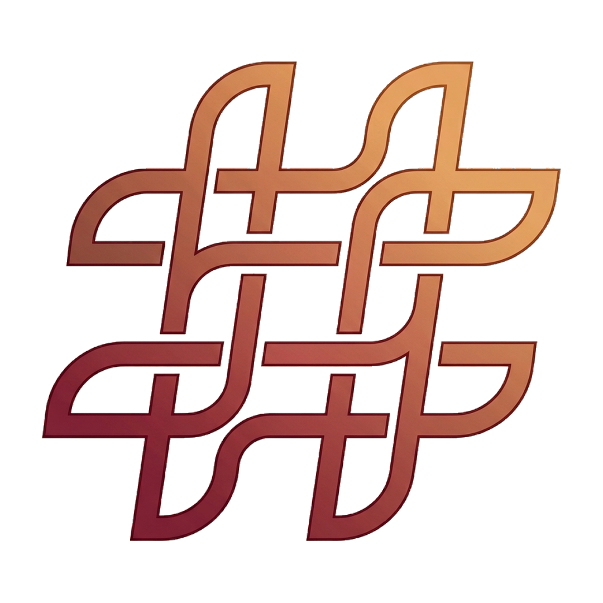

そばに「そばに Project」のビジョンと使い方
「そばに Project」は、被災地と全国の応援したい人々を温かな想いでつなぐデジタル・サステナブルプラットフォームです。
災害発生直後だけでなく、時間の経過とともに風化しがちな被災地への関心と支援を「継続的な形」で支えることを目的としています。
画面上部のドロップダウンから応援したい都道府県を選択します。マップ上に交錯する光の粒子をタップ・クリックすると、その地域へ送られた全国からの個別メッセージを確認できます。
メニューの「メッセージで応援する」から、指定のハッシュタグ（例: #そばに石川）を付けてX（旧Twitter）へ投稿してください。あなたのメッセージがマップ上に反映されます。
広告を見て寄付： 約30秒の動画広告を最後まで視聴することで、発生した広告収益が義援金として寄付されます。
公式窓口で寄付： 日本赤十字社や各自治体（都道府県）が開設する公式義援金口座へ直接遷移して寄付が可能です。
無料寄付（動画広告視聴）によって発生した広告収益は、プラットフォーム運用費の一部を除き、全額を被災地支援団体や公式義援金窓口へ寄付します。定期的に「お知らせ・ニュース」にて寄付実績と報告を行っています。
被災者の方々や閲覧される皆様が安心して利用できるよう、公認のSNS公開投稿のみを取得しています。また、誹謗中傷・不適切な表現・スパム投稿等をブロック・除去するためのフィルタリングおよび通報監視対応を行っています。
当サービスでは、メッセージ表示に必要な公開アカウント名・本文以外の不要な個人情報（位置情報・詳細プロフィール等）を取得・保持することはありません。
プロジェクト名： そばに Project (Sobani Project)
目的： 災害被災地への継続的支援・応援メッセージ可視化プラットフォームの提供
画面崩れやエラーなどの不具合、または機能改善のご要望につきましては、メニュー内の「不具合報告」フォームをご利用ください。動作環境情報とともに直接開発・運営チームへ送信されます。
3Dリアルタイムマップ表示のため、以下の環境でのご利用を推奨しております。
・iOS / Android: 最新のSafari, Chromeブラウザ
・PC: 最新のGoogle Chrome, Edge, Safari (WebGL対応環境)
「そばに」の取り組みをSNSでシェアして応援の輪を広げましょう。
選択中の地域のハッシュタグとリンクを付けてポストします。
サイトのURLをクリップボードにコピーして共有します。
「そばに」に関する最新情報・支援実績・運営からのお知らせ
あなたに合った応援スタイルをお選びください
約30秒の動画広告を最後まで視聴すると、収益が被災地への寄付金としてカウントされます。
日本赤十字社や各自治体の公式義援金窓口から、直接支援金を届けることができます。
支援金を送りたい機関をお選びください
発生した不具合や表示崩れについてお知らせください。